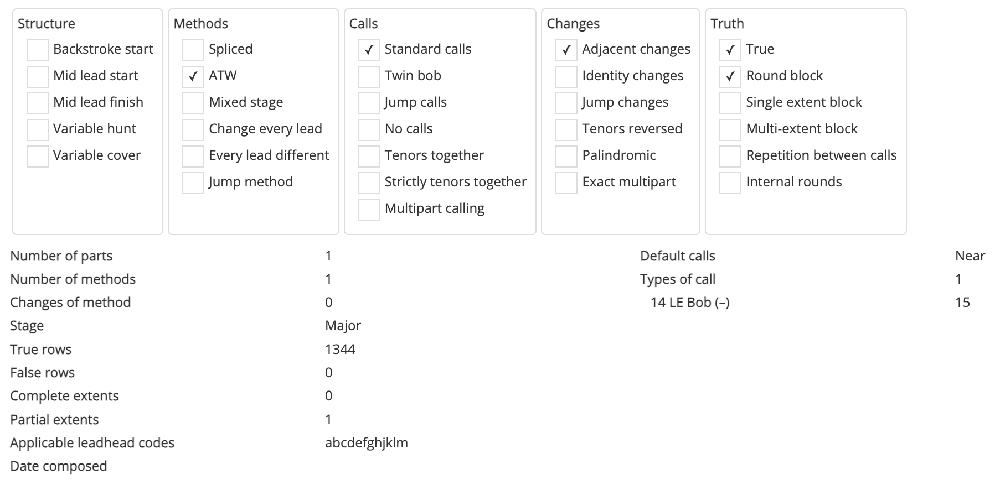

Composition properties
Compositions entered into Complib are automatically processed and their various properties determined. These properties are listed in the composition page's Properties tab.
The Properties tab

When expanded, the top of the tab shows a number of checkboxes, each of which corresponds to a different potential feature of the composition. These properties are arranged into a number of groups.
Structure
- Backstroke start
- The vast majority of compositions are designed to be started at handstroke. If the composition is designed to be started at backstroke instead, it will be indicated here.
- Mid lead start
- The composition begins at a point other than the beginning of a lead/division.
- Mid lead finish
- The composition finishes at a point other than the end of a lead/division.
- Variable hunt
-
There is a change of principal hunt bell(s) at any point during the composition.
Note: Strictness of variable hunt
This condition is strict: any composition in which the principle hunt bell does anything other the work of the hunt bell at any point will be classified as variable hunt.
This includes otherwise ordinary compositions involving a "funny start" in which the hunt bell does the work of another bell for a few changes before spending the rest of the touch as the hunt bell.
Whether a composition is variable hunt affects how its all the work property is determined (see below).
- Variable cover
-
There is a change of cover bell(s) during the composition.
Note: Variable cover and stage
In compositions which are variable cover, the stage of the composition is higher than that of the method(s) in which the change of cover occurs. This is because the stage of the composition must include the cover bell(s), which is usually ignored when determining a method's stage.
Methods
- Spliced
- The composition involves multiple methods.
- ATW
-
The composition is "all the work", meaning that all working bells ring every place bell of every method in the composition at least once. If a composition is not all the work, a note to this effect will appear at the bottom of its layout.
A breakdown of a composition's ATW status can be viewed in its ATW analysis tab.
Note: ATW for variable hunt, variable cover and mixed stage compositions
ATW is assessed differently depending on whether a composition is variable hunt or variable cover, or for compositions which are mixed stage.
- Variable hunt
-
If a composition is variable hunt, then all bells must do the work of both the working bells and the hunt bells in every method. This is true even if the hunt bell path is the same in all methods.
For example, in an variable hunt composition of Spliced Surprise Major which is ATW, all eight bells must ring every place bell in each method, and in addition they must ring the treble path in at least one lead of each method.
- Variable cover
- If a composition is variable cover, all bells must ring all place bells and do the work of the cover bell(s) in each method to be considered ATW.
- Mixed stage
- If a composition is mixed stage, and if the heaviest bell is always a cover bell in a method at the lower stage, then the cover bell is ignored for the purposes of determining ATW in that method.
- Mixed stage
- The composition includes methods at different stages (e.g. Triples and Major).
- Change every lead
- There is a change of method at the end of every lead in the composition (for compositions of spliced).
- Every lead different
- No working bell ever repeats a place bell of any method in the composition.
- Jump method
- The composition includes one or more methods which have jump changes.
Calls
- Standard calls
-
The composition uses calls belonging to one, and only one, of the standard call types. These are:
- Near calls: Fourth's place bobs and singles;
- Far calls: n-2's place bobs and singles;
- Grandsire: Grandsire-type calls;
- Stedman: Stedman-type calls.
A composition using multiple different standard call types will not be listed as using standard calls.
- Twin bob
- The composition exclusively uses pairs of bobs at S, L, Q and/or H (for compositions of Stedman Triples).
- Jump calls
- The composition includes calls which cause jump changes.
- No calls
- The composition does not include any calls.
- Tenors together
- The tenors (the two largest numbered bells in compositions of Minor, Triples and Major; bells 7 and above at higher stages) are in their home positions at each course end in the composition.
- Strictly tenors together
- The relative positions of the tenors (the two largest numbered bells in compositions of Minor, Triples and Major; bells 7 and above at higher stages) within the coursing order are unaffected by all calls.
- Multipart calling
- The composition is expressed as a number of repeated parts (with potential alterations in some parts).
Changes
- Adjacent changes
- The composition includes at least one adjacent change. An adjacent change is a non-identity change in which every bell moves at most one position between rows.
- Identity changes
- The composition includes at least one identity change. An identity change is a change where all bells remain in the same position between rows.
- Jump changes
- The composition includes at least one jump change. A jump change is a change in which at least one bell moves more than one position between rows.
- Tenors reversed
- The composition includes at least one instance in which the two heaviest bells strike in reverse order at backstroke.
- Palindromic
- There is at least one point within the composition about which it is palindromic. The changes of the composition when read in either direction from such a point are indistinguishable.
- Exact multipart
- The composition can be expressed as two or more repeated blocks, all of which have identical changes.
Truth
For a full explanation of the terms used in the following definitions, see Section 3 (J) of the Central Council Framework for Method Ringing.
- True
-
A composition is true if:
- It includes zero or more complete extents at its effective stage; and
- Any rows not part of a complete extent occur exactly once.
Warning: False compositions
Compositions which are not true are said to be false. While false compositions can be published on the Composition Library, they will be excluded from most searches, and performances using them will not be qualifying performances for the purposes of method naming, peal records, etc.
The majority of false compositions included in the Composition Library are either:
- Compositions which were discovered to be false after they were performed, but which have been kept for historical reference;
- Touches intended exclusively for practice.
False compositions are identified with a
 cross next to their titles wherever they appear in the Composition Library.
cross next to their titles wherever they appear in the Composition Library. - Round block
-
The composition begins and ends at the same row.
The Composition Library currently cannot accept compositions which are not round blocks.
- Single extent block
- The rows of the composition comprise a single complete extent at its effective stage.
- Multi-extent block
- The rows of the composition comprise exactly two or more complete extents at its effective stage.
- Repetition between calls
- The composition has one or more instances in which a row is repeated without a call or change of method being made in between. Any composition with this property will be identified with a supplementary note at the bottom of the composition layout.
- Internal rounds
- The composition has one or more instances in which rounds occurs somewhere other than the last row of a complete extent (not including the first/last row of the composition).
Miscellaneous
In addition to the above, the properties tab also lists miscellaneous information about the composition in text form. The listed items are:
- Number of parts
- The number of repeated parts comprising the composition.
- Number of methods
- The number of distinct methods included in the composition's definition.
- Changes of method
-
The number of times that the method changes during the composition.
Note: Repeated method definitions
If the same method is defined more than once under the Methods tab with different mnemonics, then any interruption to the method's changes will also count as a change of method.
For example, a composition which restarts the lead of a method partway through a lead of that same method will have a change of method recorded at that point (e.g. 1440 Lincoln Surprise Minor arr. Michael E Ovenden).
Changes of method which come about in this way are noted in the composition's Properties tab, but they will not be displayed in the composition's layout.
Warning: Implied changes of method
Change of method does not include any "implied" changes of method between the final and starting methods of a round block. A performance which comprises multiple repetitions of such a round block will therefore have additional changes of method not accounted for here.
- Stage
- The name of the stage of the composition. For mixed stage compositions, this is the name of the highest-numbered stage. See Section 3A of the Central Council Framework for an explanation of stages and their names.
- True rows
- The number of true rows in the composition. For true compositions, this will be equal to the length of the touch. For false compositions, this will be the length of the touch after subtracting any false rows (see below).
- False rows
-
The number of false rows in the composition. A row X is false if:
- X is a repetition of a previously rung row (call it Y); AND
- Neither X nor Y form part of a complete extent.
- Complete extents
- The number of complete extents at the effective stage of the composition.
- Partial extents
- The number of incomplete, or partial extents at the effective stage of the composition. For a composition which is true, this number will always be either 0 or 1.
- Applicable leadhead codes
-
The leadhead code(s) of methods for which the composition could potentially be used. For a detailed explanation of leadhead codes and their definitions, see Appendix C of the Central Council Framework for Method Ringing.
Warning: Limitations of Applicable leadhead codes
Complib currently does not derive this information from the properties of a composition. Instead, when a composition is added to the Composition Library, an internal extended search is performed against all methods at the composition's stage.
If a method is true to the composition, its leadhead code is added to the list of Applicable leadhead codes. Because of this, it is not necessarily true that a composition's Applicable leadhead codes include all leadhead codes which might be true to it. In particular, a usable leadhead code may be missing if:
- A new method was added to Complib after the composition; and
- That method is true to the composition; and
- That method's leadhead code is not already represented in the composition's Applicable leadhead codes.
- Date composed
- The date the composition was composed (if specified).
- Default calls
-
The default call type in the composition's definition. This determines what the standard calls (usually bobs
-and singless) represent in the composition. The named call types that the Composition Library uses are:- Near: calls default toward the front of the change (e.g. 4ths place bobs).
- Far: calls default toward the back of the change (e.g. n-2's place bobs).
- Grandsire: the composition uses Grandsire-type calls.
- Stedman: the composition uses Stedman-type calls.
- None: the composition has no specified call type.
- Types of call
- The number of different call types used in the composition. The number of times that each different call type occurs is also listed.